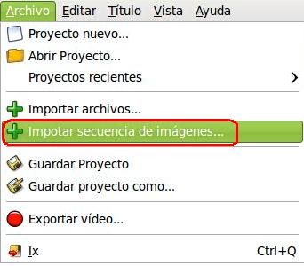
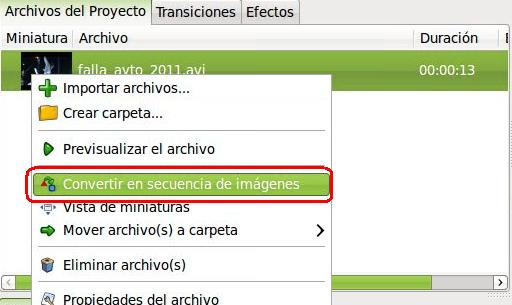
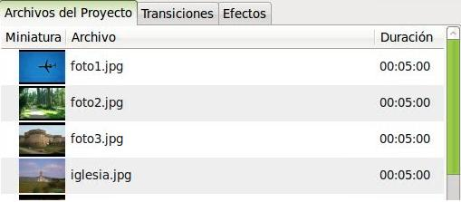

Edición de Audio y video
Introducción
En este apartado del Editor de Video Openshot procedemos a explicar lo referente a la presentación de imágenes aisladas formando parte de un video. En el mundo ofimático hablaríamos de la presentación de diapositivas con imágenes, pero en este caso usando la potencialidad de un editor de video (generar video final, aplicar efectos, añadir transiciones, entre otros).
Dividiremos los aspectos teóricos en tres grandes bloques:
- Importar una secuencia de imágenes: utilizando una de las funciones de nuestro editor, importaremos las imágenes de nuestra carpeta que tengan un patrón determinado para, de forma automática, generar un video de las mismas.

- Crear una secuencia de Imágenes: Extraer los diversos frames de un video y convertirlos en imágenes. El proceso inverso al anterior.

- Realizar una presentación de Imágenes: Generar un video de imágenes en la línea de tiempo de forma manual. Se importarán cada una de las imágenes como clips a los Archivos de proyectos y se moverán a las diversas pistas como, si cada imagen, fuera un clip independiente. Esto permite una personalización más completa del proceso, aunque exige mayor trabajo de edición.

Jo.R.C.A. 2004 - 2011

Edición de Audio y Video con Software Libre by José Ramón Cerdeira Alonso is licensed under a Creative Commons Reconocimiento-No comercial-Compartir bajo la misma licencia 3.0 España License